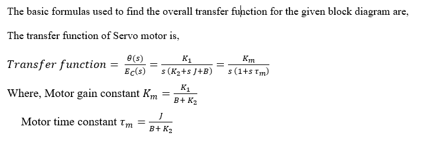

Generally servomotor is used to convert electric signal to angular velocity. Servomotor has some advanced features like wide range of speed control, linear relationship between speed and electrical signal, fast response and steady state stability. In this experiment speed of AC servo motor is obtained by the variation of electrical input voltage. Transfer function of AC servo motor is derived from torque equation. The various parameters of AC servo motor are Moment of inertia, Viscous frictional coefficient and slope of the speed and torque characteristics used to obtain the angular velocity. The overall block diagram of AC servo motor is designed using angular velocity and transfer function. It leads to understand the concept of how angular displacement changes with respect to speed and torque slope values. It also provides the knowledge about variations in speed of AC servo motor with respect to electrical input voltage.
Transfer function is obtained with help of toque equation of AC servo motor. Following with the angular velocity is calculated with help of various parameters such as Moment of inertia, Viscous frictional coefficient per-unit calculation. Then the overall block diagram of AC servomotor is constructed with help of transfer function and angular velocity. Finally the speed of servo motor is tabulated with respect to variations of electrical input voltage. The speed-toque characteristic is obtained with help of tabulated values.
